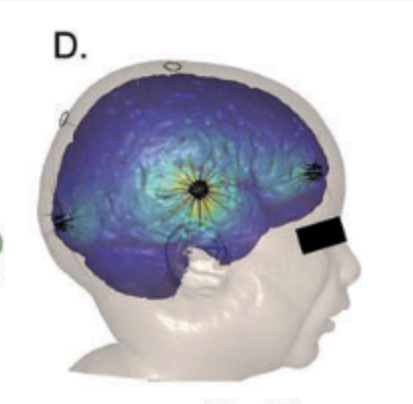
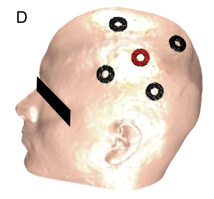

Portfolio & Publications.

Phase II Clinical Trial with HD-tDCS
Harvard/Spaulding-lead phase II clinical trial for the treatment of Fibromyalgia with HD-tDCS.
Paper
71

Physiological Artifacts in EEG during tDCS
Examination of artifacts that appear in EEG and ECG during stimulation. Including heartbeat, ocular, and myogenic artifacts.
Paper
6

Transcranial Electrical Stimulation Classification, History, and Terminology
Discussion on the span of transcranial electrical stimulation and how it relates to different types of brain stimulation technologies.
Book
4

Mapping the Visual Cortex with EEG
Mapping out the response of the primary visual cortex with a series of gabor stimuli. This informs where to best place stimuli and can give an idea of the folding of the cortex.
Paper
6

Case Study of Treating Epilepsy with tDCS
Examining how HD-tDCS can be applied in a case of severe childhood epilepsy and monitoring changes with EEG.
Paper
4

EEG Time Comparisons Can Influence tDCS Outcomes
Examining how different time and frequency band comparisons can influence tDCS findings.
Paper
4